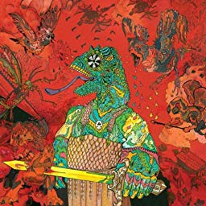
12 Bar Bruise (2012)
- 1. Elbow (2:40)
- 2. Muckraker (3:00)
- 3. Nien (2:52)
- 4. 12 Bar Bruise (3:47)
- 5. Garage Liddiard (2:29)
- 6. Sam Cherry's Last Shot (2:49)
- 7. High Hopes Low (3:46)
- 8. Cut Throat Boogie (2:50)
- 9. Bloody Ripper (2:13)
- 10. Uh Oh, I called Mum (2:38)
- 11. Sea of Trees (3:15)
- 12. Footy Footy (1:59)
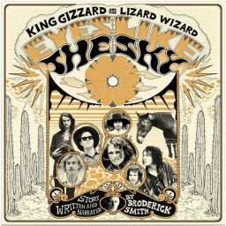
Eyes Like the Sky (2013)
- 1. Eyes Like the Sky (3:17)
- 2. Year of Our Lord (2:57)
- 3. The Raid (2:24)
- 4. Drum Run (2:42)
- 5. Evil Man (3:54)
- 6. Fort Whipple (2:56)
- 7. The God Mans Goat Lust (3:17)
- 8. The Killing Ground (2:50)
- 9. Dust in the Wind (2:24)
- 10. Guns & Horses (1:08)
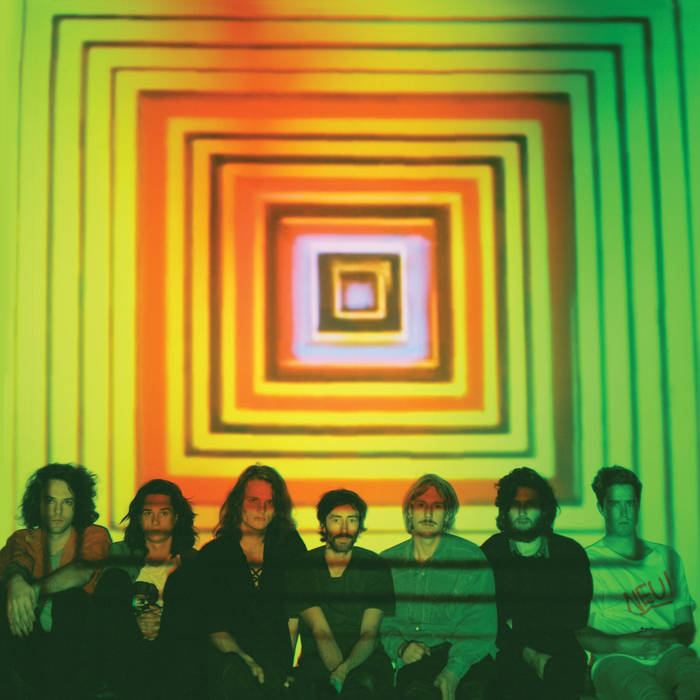
Float Along - Fill Your Lungs (2013)
- 1. Head On/Pill (15:59)
- 2. I Am Not a Man Unless I Have a Woman (2:55)
- 3. God Is Calling Me Back Home (4:24)
- 4. 30 Past 7 (3:43)
- 5. Let Me Mend the Past (2:30)
- 6. Mystery Jack (2:47)
- 7. Pop in My Step (2:51)
- 8. Float Along - Fill Your Lungs (6:45)
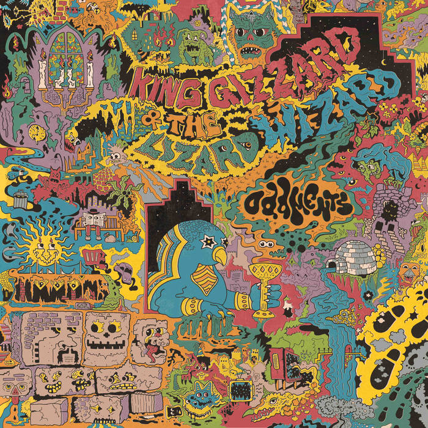
Oddments (2014)
- 1. Alluda Majaka (3:34)
- 2. Stressin (2:56)
- 3. Vegemite (2:45)
- 4. It's Got Old (2:58)
- 5. Work This Time (4:36)
- 6. ABABCd (0:17)
- 7. Sleepwalker (3:46)
- 8. Hot Wax (3:29)
- 9. Crying (2:56)
- 10. Pipe-Dream (1:01)
- 11. Homeless Man in Addidas (3:24)
- 12. Oddments (0:25)
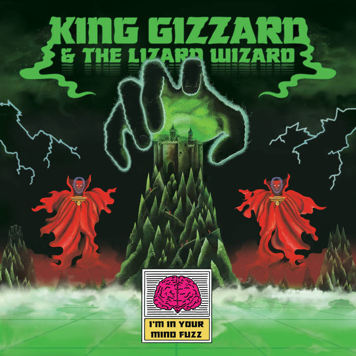
I'm in Your Mind Fuzz (2014)
- 1. I'm in Your Mind (3:34)
- 2. I'm Not in Your Mind (2:58)
- 3. Cellophane (3:11)
- 4. I'm in Your Mind Fuzz (2:52)
- 5. Empty (4:11)
- 6. Hot Water (3:24)
- 7. Am I in Heaven? (7:06)
- 8. Slow Jam 1 (2:55)
- 9. Satan Speeds Up (3:39)
- 10. Her and I (Slow Jam 2) (8:15)
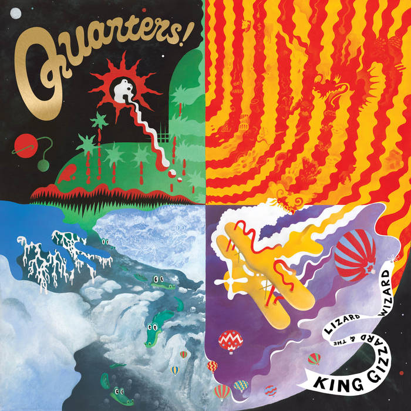
Quarters! (2015)
- 1. The River (10:10)
- 2. Infinite Rise (10:10)
- 3. God Is in the Rhythm (10:10)
- 4. Lonely Steel Sheet Flyer (10:10)
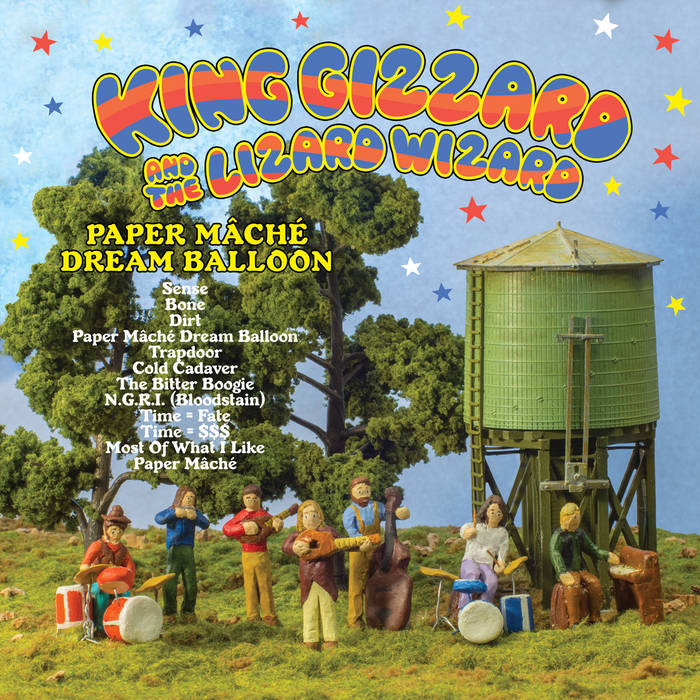
Paper Mache Dream Balloon (2015)
- 1. Sense (3:30)
- 2. Bone (2:16)
- 3. Dirt (2:50)
- 4. Paper Mache Dream Balloon (2:39)
- 5. Trapdoor (2:38)
- 6. Cold Cadaver (2:43)
- 7. The Bitter Boogie (4:29)
- 8. N.G.R.I. (Bloodstain) (2:25)
- 9. Time = Fate (2:26)
- 10. Time = $$$ (2:04)
- 11. Most of What I Like (3:17)
- 12. Paper Mache (2:29)
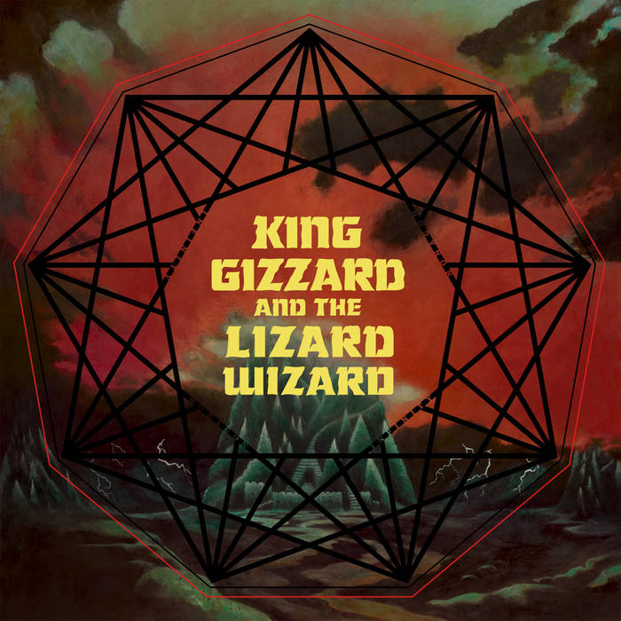
Nonagon Infinity (2016)
- 1. Robot Stop (5:22)
- 2. Big Fig Wasp (4:54)
- 3. Gamma Knife (4:21)
- 4. People-Vultures (4:45)
- 5. Mr. Beat (4:56)
- 6. Evil Death Roll (7:14)
- 7. Invisible Face (3:01)
- 8. Wah Wah (2:54)
- 9. Road Train (4:18)
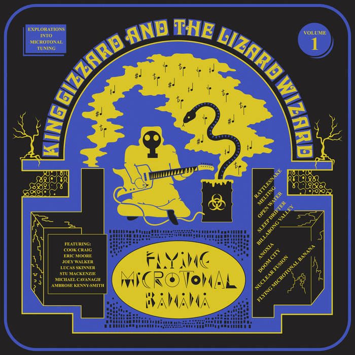
Flying Microtonal Banana (2017)
- 1. Rattlesnake (7:48)
- 2. Melting (5:27)
- 3. Open Water (7:13)
- 4. Sleep Drifter (4:44)
- 5. Billabong Valley (3:34)
- 6. Anoxia (3:04)
- 7. Doom City (3:14)
- 8. Nuclear Fusion (4:15)
- 9. Flying Microtonal Banana (2:34)
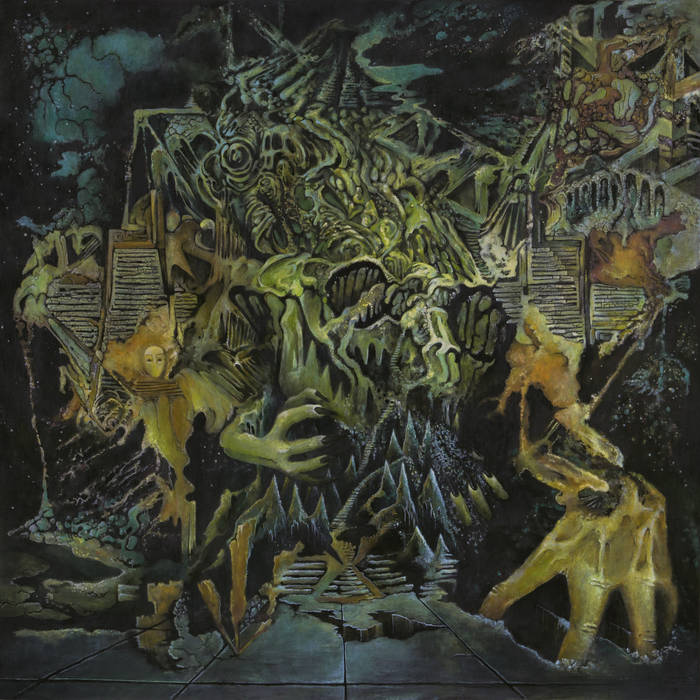
Murder of the Universe (2017)
- 1. A New World (0:57)
- 2. Altered Beast I (2:23)
- 3. Alter Me I (0:45)
- 4. Altered Beast II (4:28)
- 5. Alter Me II (1:25)
- 6. Altered Beast III (2:14)
- 7. Alter Me III (1:26)
- 8. Altered Beast IV (5:10)
- 9. Life/Death (1:00)
- 10. Some Context (0:16)
- 11. The Reticent Raconteur (1:05)
- 12. The Lord of Lightning (5:06)
- 13. The Balrog (4:29)
- 14. The Floating Fire (1:54)
- 15. The Acrid Corpse (1:00)
- 16. Welcome to an Altered Future (0:55)
- 17. Digital Black (2:46)
- 18. Han-Tyumi, the Confused Cybord (2:21)
- 19. Soy-Protein Munt Machine (0:30)
- 20. Vomit Coffin (2:19)
- 21. Murder of the Universe (4:09)
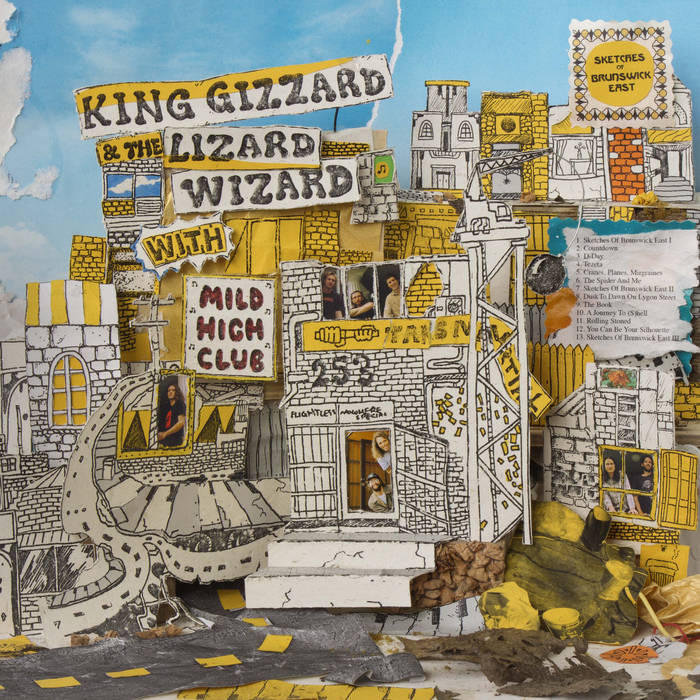
Sketches of Brunswick East (2017)
- 1. Sketches of Brunswick East (1:20)
- 2. Countdown (3:22)
- 3. D-Day (1:38)
- 4. Tezeta (3:30)
- 5. Cranes, Planes, Migraines (1:15)
- 6. The Spider and Me (3:16)
- 7. Sketches of Brunswick East II (3:26)
- 8. Dusk to Dawn on Lygon Street (3:02)
- 9. The Book (5:00)
- 10. A Journey to (S)hell (2:16)
- 11. Rolling Stoned (3:18)
- 12. You Can Be Your Silhouette (3:48)
- 13. Sketches of Brunswick East III (2:08)
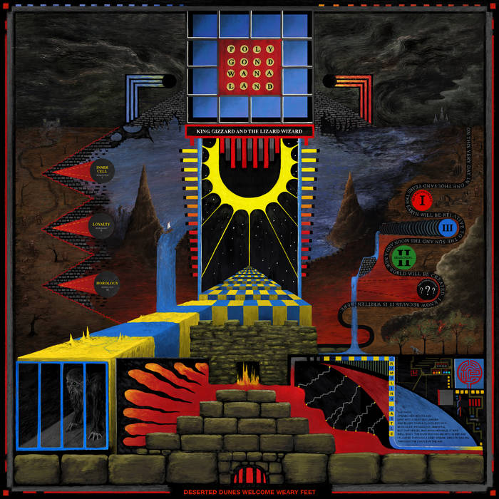
Polygondwanaland (2017)
- 1. Crumbling Castle (10:46)
- 2. Polygondwanaland (3:33)
- 3. The Castle in the Air (2:48)
- 4. Deserted Dunes Welcome Weary Feet (3:34)
- 5. Inner Cell (3:56)
- 6. Loyalty (3:39)
- 7. Horology (2:52)
- 8. Tetrachromacy (3:31)
- 9. Searching... (4:04)
- 10. The Fourth Colour (6:13)
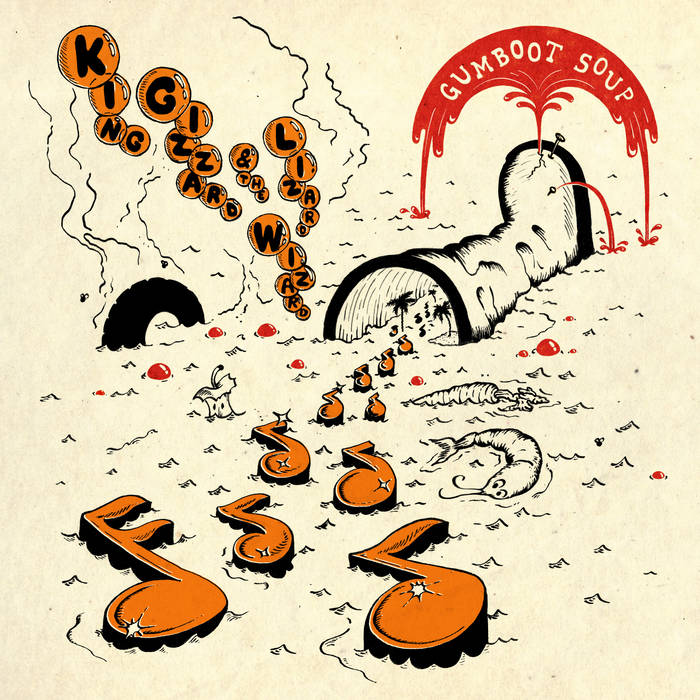
Gumboot Soup (2017)
- 1. Beginner's Luck (4:25)
- 2. Greenhouse Heat Death (4:13)
- 3. Barefoot Desert (3:43)
- 4. Muddy Water (3:38)
- 5. Superposition (3:35)
- 6. Down the Sink (4:00)
- 7. The Great Chain of Being (4:50)
- 8. The Last Oasis (3:34)
- 9. All Is Known (3:34)
- 10. I'm Sleeping In (3:00)
- 11. The Wheel (5:36)

Fishing for Fishies (2019)
- 1. Fishing for Fishies (5:01)
- 2. Boogieman Sam (4:41)
- 3. The Bird Song (4:24)
- 4. Plastic Boogie (3:02)
- 5. The Cruel Millennial (4:56)
- 6. Real's Not Real (3:40)
- 7. This Thing (4:00)
- 8. Acarine (5:24)
- 9. Cyboogie (6:48)